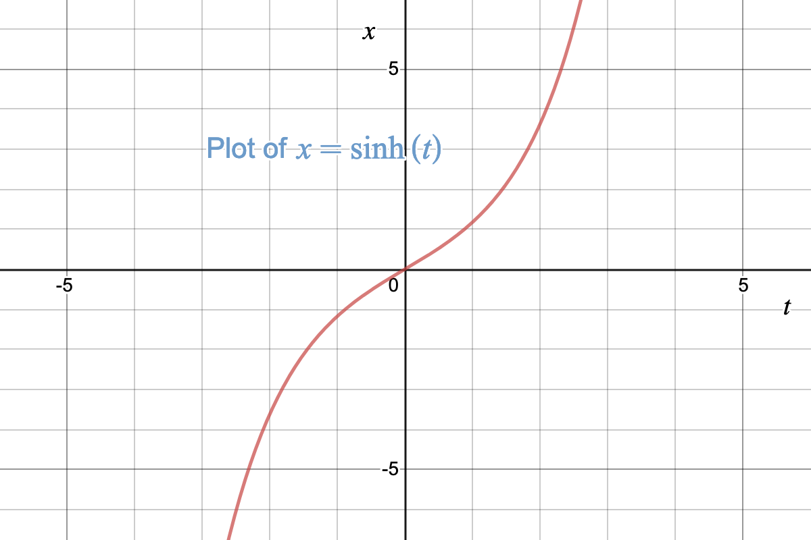
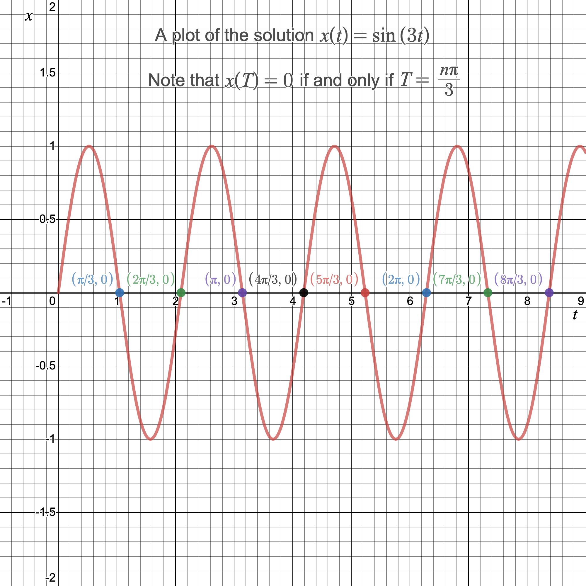

Jonathan Crofts
Nottingham Trent University
Lecturer: Dr Jonathan Crofts
New Hall Block: Room 233
Email: jonathan.crofts@ntu.ac.uk
Lecturer: 13-14, Tuesday ERD 161
Seminars: Group M1 9-10, Tuesday NHB 169
Group M2 10-11, Tuesday ABK 005
9:00-10:00 Monday
Equations of the form
\[\color{red}{\boxed{\color{white} {x'' = F(t,x,x')}}}\]Here
\[ x' = \frac{\mathrm{d}x}{\mathrm{d}t} \quad\text{and}\quad x'' = \frac{\mathrm{d}^2x}{\mathrm{d}t^2} \]Since the right-hand side is linear in the independent variable and its first derivative, $F$ takes the form
\[ \begin{align*} F(t,x,x')&=a(t)x'+b(t)x+c(t)\\ &= ax'+bx+c \end{align*} \]Solve the ODE $~~\color{red}{\boxed{\color{white}{ x'' = 0}}}$
We can solve the ODE by direct integration
Integrating we obtain
\[ x'(t) = A ~\text{ for some constant $A\in\mathbb{R}$} \]Integrating again gives
\[ \color{#00FF00}{\boxed{\color{white}{ x(t) = At+B, \quad A, B\in\mathbb{R}}}} \]This is the general solution of our ODE.
We can check via substitution that this function satisfies our ODE
Solve the ODE $~~\color{red}{\boxed{\color{white}{ x'' = 9x}}}$
To solve we use the following ansatz: $~~\displaystyle x(t) = Ae^{mt}$
Substituting this into our ODE and rearranging to the LHS gives
\[ Ae^{mt}\left(m^2-9\right) = 0\implies m^2-9 = 0 ~\text{ or }~ m = \pm 3 \]This results in two solutions
\[ x_1(t)=Ae^{3t} ~\text{ and }~ x_2(t)=Be^{-3t} \]We combine these linearly to obtain the general solution
\[ \color{#00FF00}{\boxed{\color{white} {x(t) = Ae^{3t}+Be^{-3t}, \quad A,B\in\mathbb{R}}}} \]Solve the ODE $~~\color{red}{\boxed{\color{white}{ x'' = -9x}}}$
Using the same ansatz as in Example 1.2 we obtain the auxillary equation
\[ m^2+9 = 0 \implies m = \pm 3i \]This results in two solutions
\[ x_1(t)=Ae^{3it} ~\text{ and }~ x_2(t)=Be^{-3it} \]However, these solutions are complex and since our ODE is real we wish to restrict to real solutions
We can do this by deploying Euler's formula...
Recalling Euler's formula
\[ \color{red}{\boxed{\color{white}{ e^{i\theta} = \cos(\theta)+i\sin(\theta)}}} \]we see that our solutions take the form: $~\displaystyle \cos(3t)\pm i\sin(3t)$
It can be shown (but not in this course) that restricting to real solutions only, gives the following general solution to our ODEs
\[ \color{#00FF00}{\boxed{\color{white}{ x(t) = A\cos(3t)+B\sin(3t)}}} \]Thus imaginary roots of the auxillary equation result in oscillatory solutions whereas real roots give exponential growth/decay
For a second-order homogeneous linear ODE an initial value problem consists of an ODE of the form
\[ x''+a(t)x'+b(t)=0 \]Alongside two initial conditions
\[ x(t_0) = x_0 \quad \text{and} \quad x'(t_0) = v_0 \]Let us return to Example 1.3
Recall that the solution was given by
\[ \color{#00FF00}{\boxed{\color{white}{ x(t) = A\cos(3t)+B\sin(3t)}}} \]Now suppose we are given the initial conditions (i.e. it is an IVP)
\[ x(0) = x_0 \quad \text{and} \quad x'(0) = v_0 \]Then it is straightforward to solve for $A$ and $B$ to obtain the solution:
\[ x(t) = x_0\cos(3t)+\frac{v_0}{3}\sin(3t) \]To see this note that incorporating the first IC gives
\[ x(0) = A\cos(3\cdot 0)+B\sin(3\cdot 0) = A = x_0 \]and the second IC gives
\[ x'(0) = -3x_0\sin(3\cdot 0) + 3B\cos(3\cdot 0) = 3B = v_0 \]thus
\[ B = \frac{v_0}{3} \]giving the particular solution
For a second-order homogeneous linear ODE a boundary value problem consists of an ODE of the form
\[ x''+a(t)x'+b(t)=0 \]Alongside two boundary conditions
\[ x(a) = A \quad \text{and} \quad x(b) = B \quad \]In general BVPs are more difficult to solve than IVPs since they are global rather than local in nature
Let us return to Example 1.2 (i.e. $ x'' = 9x$)
Recall that the solution was given by
\[ \color{#00FF00}{\boxed{\color{white}{ x(t) = Ae^{3t}+Be^{-3t}}}} \]Now suppose we are given the boundary conditions (i.e. it is a BVP)
\[ x(0)=0 \quad \text{and} \quad x(T) = 0 \]The first BC gives $~~\displaystyle x(0) = Ae^{3\cdot 0}+Be^{-3\cdot 0} = A+B = 0$, thus
\[ \color{red}{\boxed{\color{white}{ \sinh(at) = \frac{1}{2}\left(e^{at}-e^{-at}\right)}}} \]
\[ \begin{align*} \implies&A = -B \text{ and so } x(t) = A\left(e^{3t}-e^{-3t}\right)\\ \implies& \color{#00FF00}{\boxed{\color{white}{ x(t) = 2A\sinh(3t)}}} \end{align*} \]
But there's a problem!
So far, we have only used our first BC, obtaining the solution
\[ \color{#00FF00}{\boxed{\color{white}{ x(t) = 2A\sinh(3t)}}} \]
The second BC states that
\[ x(T) = 2A\sinh(3T) = 0 \]$\quad$
So either $A=0$ or $T=0$ since $\sinh(t)=0 \iff t=0$
Thus no solutions exist that satisfy both the ODE and the given BCs
What about Example 1.3 as a BVP? (i.e. $x''=-9x$)
In this case recall that the solution is
\[ \color{#00FF00}{\boxed{\color{white}{ x(t) = A\cos(3t) + B\sin(3t)}}} \]And so applying the BCs from earlier we obtain
\[ \begin{align*} x(0) &= A\cos(3\cdot 0) + B\sin(3\cdot 0) \implies x(t) = B\sin(3t)\\ &=A=0 \end{align*} \]Applying the second BC gives: $\quad\displaystyle \color{red}{\boxed{\color{white}{ x(T) = B\sin(3T) =0}}}$
So either $B=0$ or ...
...or what?
If $B$ is non-zero then we must have that
\[ \begin{align*} \sin(3T) = 0 \text{ so that } 3T &=n\pi, n\in\mathbb{Z}\\ \text{ or } T &= \frac{n\pi}{3}, n\in\mathbb{Z} \end{align*} \]In other words, if $T$ is an integer multiple of $\pi/3$ then
\[ \color{#00FF00}{\boxed{\color{white}{ x(t) = B\sin(3t)}}} \]
is a solution, otherwise it is not
Note that the time $T$ is intrinsically related to the solution frequency
